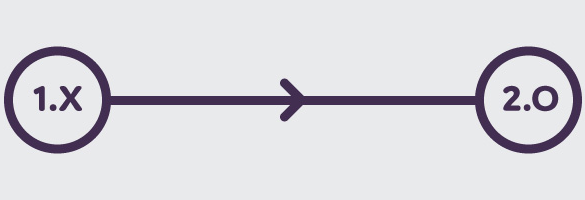
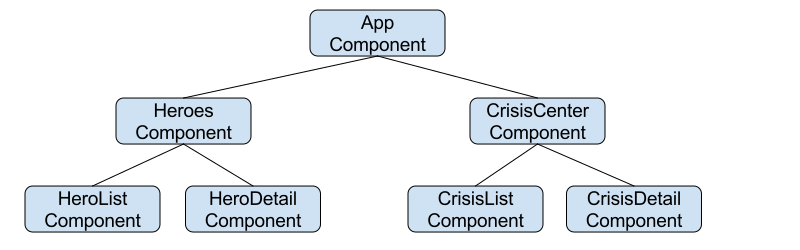

Nat.js
d'Angularjs à Angular
Présenté par Mathieu Bellange / EQS - DEW
Programme
Architecture et écosystème d'Angular 2
Composant, langage, module et autres concepts
Migration vers Angular 2
Problématique, solution et super héros
Angular 2 à la loupe
Architecture, nouveautés et ecosystème
Sous le capot d'Angular 2
Architecture orientée composant
Aperçu

Les modules
Module au sens ES2015
N'a rien à voir avec angular.module d'angularjs
Les modules applicatifs
Un bloc de code dédié à un seul but
Un exemple simple est un composant Angular 2 qui sera exporté comme un module
Les modules de libairies
Un module qui peut exporter plusieurs fonctions, constantes, objets...
Les librairies Angular 2 sont des modules qui exposent de nombreuses fonctionnalités
Les composants Angular 2

Le composant
Pilote un template html, appel des services et gère le data-binding
Il se rapproche des directives Angular 1
Le template html
Accompagne le composant
Il permet de binder le comportement du composant à la vue html
Les metadata
La Définition d'un composant
Permet d'enrichir le composant avec une logique Angular
Ce sont des class ES2015 et les metadata permettent de les traiter comme des composants Angular
Data binding

Lien entre composant et template html
Permet au composant et au fragment html d'intéragir
La syntaxe de data-binding est différente que pour Angular 1
Lien entre composants
Permet au composant parent et enfant d'interagir

Directives
Directives Angular
Permet d'enrichir le DOM avec un comportement
La syntaxe des directives est différente que pour Angular 1
Services
Services Angular
Possède le même rôle que les services Angular 1
Les services Angular 2 sont des class ES2015
Injection de dépendances

Injector
Service qui permet à Angular 2 d'injecter un service dans un composant ou un autre service
Logique identique à celle d'Angular 1
Provider
Service qui permet à Angular 2 d'enregistrer un service pour le rendre accessible par l'Injector
Peut être enregistré au bootstrap de l'application où dans un composant
Nouveautés relatives à Angular 2
Changements depuis Angular 1
Modifications sur le coeur d'Angular, la syntaxe, le data-binding...
Certains ont un impact important sur le développement
DOM et data-binding
HTML parser
Développement d'un parser HTML custom à Angular
jqlite, utilisé pour Angular 1, n'est plus utilisé dans Angular 2
Syntaxe du data binding
La syntaxe change pour permettre de définir directement un binding mono ou bi directionnel

Pipes
Pipes remplaçant des filters
Traite la donnée en exécutant une fonction
Les pipes peuvent être chainés pour réaliser un travail complexe par étape
Ecosystème javascript
Plomberie Javascript
Module loader, package manager et langage
Le framework utilise les dernières évolutions sur le développement Javascript
Module loader
Module JavaScript
Bloc de code exportant des fonctions, objet, constantes
Plusieurs spécifications existent commonJs, Amd, ES6 et global
SystemJs
Librairie permettant de charger des modules dans une application
SystemJs peut charger n'importe quel type de module et l'exposer dans le reste de l'application
Module bundler

Rôle du module bundler
Livraison d'un bundle pour le déploiement en production
Il se base sur les modules de l'application pour packager une application optimisée et prête pour la production
Webpack, le leader du marché
Il réalise le travail d'un module loader, de grunt/gulp et beaucoup d'autres choses
Serveur de développement, utilisation de transpiler, HMR...
Le langage

ES6 ou TypeScript ?
Faut-il développer avec Angular 2 en ES6 ou en TypeScript ?
Angular 2 est développé en TypeScript
TypeScript
- Utilisation d'un transpiler TypeScript
- Le langage d'Angular 2
- Un langage typé
ES6
- Utilisation d'un transpiler Babel, Traceur
- Syntaxe Angular 2 identique avec l'intégration de plugin Babel pour la gestion des annotations
- Un langage non typé
Conclusion ?
Le choix de ces technologies va fortement dépendre de l'équipe impliqué dans le développement
ES6 comme TypeScript demande une courbe d'apprentissage plus ou moins longue
Angular-transition
Problématique
De nombreux changements apportés avec Angular 2
Architecture de l'application, écosystème JavaScript, langage...
Solutions envisagées
Méthode big bang ou incrémentale
Chaque solution à ses avantages et ses inconvénients
Comparaison
| Méthode | Taille | Dépendances | Temps |
|---|---|---|---|
| Big Bang | + | + | +++ |
| Incrémentale | +++ | +++ | + |
Big Bang
Taille et complexité
Plus l'application est importante et plus elle sera longue à migrer
Il faut aussi tenir compte de la complexité de celle-ci ainsi que du niveau de respect des règles de développement angularjs
Dépendances
Certaines dépendances peuvent être compliquées à migrer
Certaines ne fonctionneront tout simplement pas
Temps
Va directement dépendre de la taille et de la complexité de l'application
L'application est off pendant toute la migration
Incrémental
Taille et complexité
L'application migre par morceau, la taille et la complexité de l'application est moins impactant
Chaque brique peut être migrée à son rythme sans impacter le reste de l'application
Dépendances
Les dépendances problèmatiques peuvent être migrées au cas par cas
On peut attendre de migrer les dépendances au fur et à mesure des sorties de nouvelles versions ou les remplacer
Temps
Va directement dépendre de la taille et de la complexité de l'application
L'application est fonctionnelle durant toute la migration
Choix de la méthode
Va dépendre de l'application, des moyens alloués à la migration...
Une application qui envisage une migration doit analyser son existant pour définir quelle méthode utilisée
Migration d'une application
Méthode
Migration incrémentale vers Angular 2
Suivant les pré requis Angular 2, réaliser une migration incrémentale d'une application en Angular < 1.5
Etapes
- Changement d'architecture
- Modularisation de l'application
- Evolution du langage
- Passage à Angular 2
Changement d'architecture
Isolation du scope
Première chose à réaliser, supprimer toute référence au scope
$scope ne doit plus être référencé que pour $on, $watch...
Syntaxe Controller As
Présent depuis Angular 1.2
Consiste à isoler le scope d'un controller pour qu'il ne pollue pas le scope de l'application
Controller
function heroesController(HeroesService) {
'use strict';
var vm = this;
HeroesService.getAll().then(function(heroes) {
vm.heroes = heroes;
});
vm.onSelect = function(hero) {
vm.selectedHero = hero;
};
}
Route
$stateProvider
.state('heroes', {
url: 'heroes',
templateUrl: 'app/heroes/heroes.template.html',
controller: 'HeroesController as heroesController'
}
});
Template
<ul class="heroes">
<li ng-repeat="hero in heroesController.heroes"
ng-click="heroesController.onSelect(hero)">
<span class="badge">{{hero.id}}</span> {{hero.name}}
</li>
</ul>
<div ng-if="heroesController.selectedHero">
<h2>
{{ heroesController.selectedHero.name | uppercase }} is my hero
</h2>
</div>
Découpage en composant
Ajout de directives pour chaque page
Si possible, découper chaque partie de page en directive avec leur propre controller
Déclaration des controllers
Déclarer les controller de chaque page dans les directives correspondantes
Les fichiers html et les routes ne doivent plus déclarer les controllers
Correction des routes
Pointe vers une directive et plus vers une page html
Les controllers sont aussi supprimés des routes
Directive
angular
.module('angular-transition.heroes')
.directive('heroes', function() {
'use strict';
return {
restrict: 'E',
templateUrl: 'app/heroes/heroes.template.html',
controller: 'HeroesController',
controllerAs: '$ctrl',
scope: {}
};
});
Route
$stateProvider
.state('heroes', {
url: 'heroes',
template: '<heroes></heroes>'
});
Migration Angular 1.5
Introduction de la notion de component
Le component d'Angular 1.5 est apparu pour faciliter la migration vers Angular 2
Caractéristique
Un component est une directive de type element, avec un scope isolé et une syntaxe controller As
Certaines propriétés des directives ne sont plus accessible en component, voir la documentation angular
Impact sur les directives
Il faudra probablement refactorer certaines directives
Méthode link supprimé, seulement des directives de type element, suppression du scope, bindings directement sur le controller...
Component
angular
.module('angular-transition.heroes')
.component('heroes', {
templateUrl: 'app/heroes/heroes.template.html',
controller: 'HeroesController'
});
Modularisation de l'application
Intégration de systemjs
Modifier le bootstrap de l'application avec Systemjs
Impact important sur l'application, correction sur l'injection de dépendance...
Intégration des librairies angular
Déclaration des libairies en global dans systemjs
Certaines librairies peuvent être compliquées à charger avec systemjs
Configuration
System.config({
map: {
'system-polyfills': 'node_modules/systemjs/dist/system-polyfills.js',
angular: 'node_modules/angular/angular',
'angular-router': 'bower_components/angular-ui-router/release/angular-ui-router',
'angular-resource': 'node_modules/angular-resource/angular-resource'
},
Single responsibility
Une fonction par fichier
Ne pas mettre le controller, service, directives... dans le même fichier js
Import/Export des modules
Spec commonjs pour gérer les modules de l'application
Chaque fichier sera exporté et assemblé dans un fichier séparé avec la déclaration du module Angular
Export d'un controller
function HeroesController(HeroesService) {
HeroesService.getAll().then(function(heroes) {
this.heroes = heroes;
}.bind(this));
}
HeroesController.prototype.onSelect = function(hero) {
this.selectedHero = hero;
};
HeroesController.$inject = ['HeroesService'];
module.exports = HeroesController;
Export d'un component
var HeroesController = require('./heroes.controller');
module.exports = {
templateUrl: 'app/heroes/heroes.template.html',
controller: HeroesController
};
Import et déclaration dans Angular
var angular = require('angular');
var Hero = require('./hero.entity');
var HeroesService = require('./heroes.service');
var HeroesComponent = require('./heroes.component');
var heroes = module.exports = angular.module('angular-transition.heroes', [
'ngResource',
'ui.router'
]);
heroes.factory('Hero', Hero);
heroes.service('HeroesService', HeroesService);
heroes.component('heroes', HeroesComponent);
Evolution du langage
Migration ES6 ou typescript
La migration peut se faire de manière incrémental
Les transpileurs babel et typescript tolère la présence d'ES5 dans les sources
Controller Typescript
import HeroesService from './heroes.service.ts';
import Hero from './hero.interface';
export class HeroesController {
selectedHero: Hero = null;
static $inject = ['HeroesService'];
constructor(private HeroesService: HeroesService) {
HeroesService.getAll().then(function (heroes: Array<Hero>) {
this.heroes = heroes;
}.bind(this));
}
onSelect(hero: Hero):void {
this.selectedHero = hero;
}
}
Component Typescript
import { HeroesController } from './heroes.controller.ts';
import { IComponentOptions } from 'angular';
export default class HeroesComponent implements IComponentOptions {
public controller: Function;
public templateUrl: string;
constructor() {
this.controller = HeroesController;
this.templateUrl = 'app/heroes/heroes.template.html';
}
}
Déclaration Angular Typescript
import angular from 'angular';
import HeroResource from './hero.resource.ts';
import HeroesService from './heroes.service.ts';
import HeroesComponent from './heroes.component.ts';
const heroes = angular.module('angular-transition.heroes', [
'ngResource',
'ui.router'
]);
heroes.factory('HeroResource', HeroResource);
heroes.service('HeroesService', HeroesService);
heroes.component('heroes', new HeroesComponent());
export default heroes;
Passage à Angular 2

Migration Angular 2
La migration vers Angular 2 peut elle aussi se faire de manière incrémentale
L'équipe Angular a mis à disposition un module permettant de faire communiquer du code Angular 1 et Angular 2
NgUpgrade
Le module @angular/upgrade permet de faire cohabiter du code Angular 1 et 2
La librairie permet d'upgrader des composants Angular 1 pour les utiliser dans du code Angular 2 ou de downgrader des composants Angular 2 pour les utiliser dans du code Angular 1
Déclaration de NgUpgrade
import { UpgradeAdapter } from '@angular/upgrade';
export const upgradeAdapter = new UpgradeAdapter();
Migration d'un component Angular 1
Transfert du controller dans la class du component et ajout de l'annotation @component
Un component Angular 2 est la somme d'un component Angular 1 et de son controller
Component Angular 2
@Component({
selector: 'heroes',
templateUrl: 'app/heroes/heroes.template.html'
})
export class Heroes implements OnInit {
public heroes:Array<Hero> = [];
constructor(@Inject('HeroesService') private HeroesService: HeroesService) {}
ngOnInit() {
this.HeroesService.getAll().then(function (heroes:Array<Hero>) {
this.heroes = heroes.slice(1, 5);
}.bind(this));
}
Upgrade de services Angular 1
Pour utiliser des services Angular 1 dans un component Angular 2, il faut l'upgrader
le composant est déclaré comme une directive et sera utilisable partout dans le code Angular
Downgrade de composants
De la même façon, un composant Angular 2 doit être downgradé pour être utilisé dans Angular 1
On peut ainsi déclarer un composant Angular 2 dans une directive Angular 1, un service Angular 2 dans un service Angular 1...
Upgrade d'un service Angular 1 et downgrade d'un composant
import { IDirectiveFactory } from 'angular';
import { upgradeAdapter } from '../core/upgrade-adapter';
import HeroResource from './hero.resource';
import HeroesService from './heroes.service';
import { HeroesComponent } from './heroes.component';
const heroes: angular.IModule = angular.module('angular-transition.heroes', [
'ngResource'
]);
heroes.factory('HeroResource', HeroResource);
heroes.service('HeroesService', HeroesService);
heroes.directive('heroes',upgradeAdapter.downgradeNg2Component(HeroesComponent));
upgradeAdapter.upgradeNg1Provider('HeroesService');
export default heroes;
Migration de l'arbre des composants
Partir de la base pour remonter vers le composant racine
Facilite la migration en commençant par les composants avec le moins de dépendances
Router Angular 2
Le router n'est toujours pas stable
3 ème version livrée avec la RC2
Fin de migration
Suppression des librairies Angular 1 et de ngUpgrade
Une fois totalement migrée, les dernières lib peuvent être supprimés